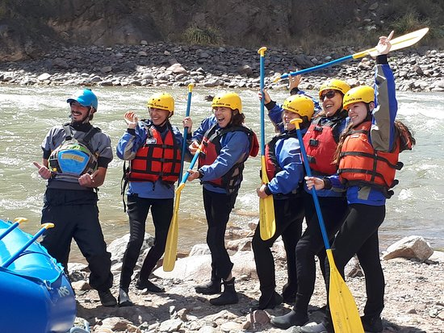

Willka Rafting Adventures was born in the heart of the Peruvian Andes, inspired by the wild spirit of the Ichu River and the deep cultural roots of Huancavelica. What started as a dream between a few friends and local nature enthusiasts soon became a full-fledged adventure company. With nothing more than a couple of rafts, an old pickup truck, and a fierce love for the land, our founders began organizing weekend rafting experiences for locals and curious travelers. Word spread quickly, and what once was a small weekend hobby became a growing movement to promote sustainable tourism, celebrate local traditions, and protect the rivers that give life to our region.

As the company grew, so did our mission. We invested in professional equipment, developed rigorous safety protocols, and trained a new generation of guides—many of them born and raised along the very rivers we now navigate. Over the years, we've had the honor of guiding thousands of adventurers from around the world, sharing not only the thrill of the rapids, but also stories, legends, and wisdom passed down through generations. Today, Willka Rafting Adventures stands as a proud representative of responsible tourism and Andean resilience, proving that with passion, purpose, and community, even the wildest rivers can lead to incredible journeys.